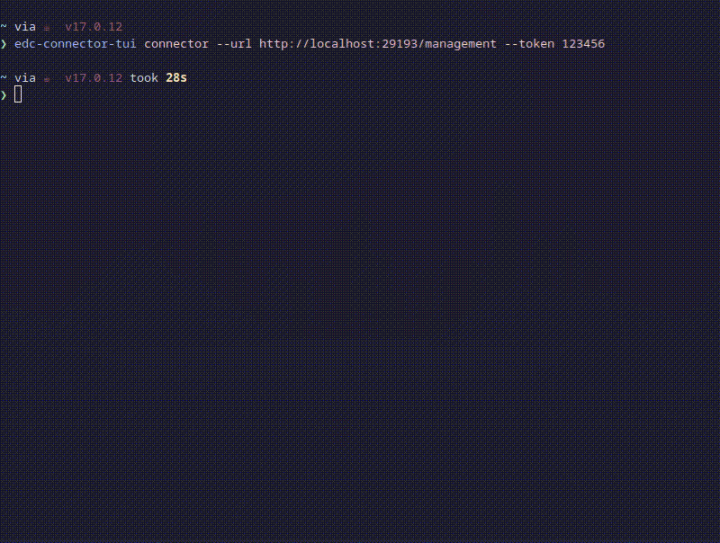

edc-connector-tui
EDC Connector TUI
A TUI client for EDC.



Install
Fetch a latest release here
or install with cargo
cargo install edc-connector-tui
Run
The TUI client can either run with a single connector configured via cli args:
edc-connector-tui connector --url http://localhost:29193/management --token 123456
or if no args provided it will try to read connectors configuration from the file at ~/.config/edc-connector-tui/config.toml
The file should contain the list of configured connectors:
[[connectors]] name="FirstConnector" address="http://localhost:29193/management" auth= { type = "token", token_alias = "connector_alias" } [[connectors]] name="SecondConnector" address="http://myconnector.xyz/management"
The token_alias is used to fetch the actual token from the system keyring for the service edc-connector-tui.
For configuration above the token could be set with secret-tool on Linux:
secret-tool store --label="FirstConnector" service edc-connector-tui username connector_alias
Altough
edc-connector-tuibuilds for OSX and Windows are available, it has been only tested on Linux. Contributions are welcome for multiplatform support/testing